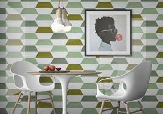
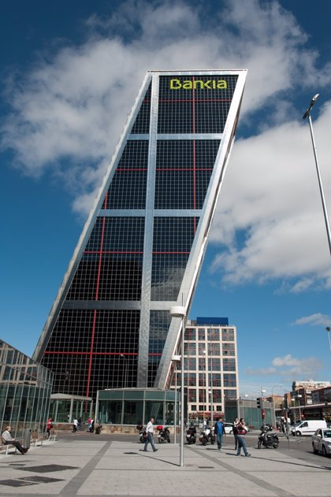

LOS CUADRILÁTEROS
Los cuadriláteros son polígonos formados por cuatro lados, cuatro ángulos y cuatro vértices. En la tarea anterior estudiamos los cuadriláteros regulares, “los cuadrados”, pero en nuestra vida cotidiana hay más cuadriláteros con nombre propio, los más conocidos son los rectángulos, los rombos o los trapecios.
En el siguiente vídeo nos explican la clasificación de los cuadriláteros: LOS CUADRILÁTEROS
Una vez hayas visto el vídeo, identifica los cuadriláteros de las siguientes imágenes, indicando de qué tipo son y sus características:
CUADRILÁTERO 1
CUADRILÁTERO 2

CUADRILÁTERO 3

CUADRILÁTERO 4

CUADRILÁTERO 5
La actividad se realizará en la ficha del portfolio.
Temporalización: 1 sesión.